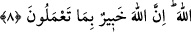
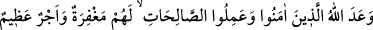
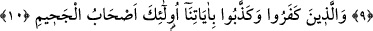

8- Ey îman edenler! Allah için hakkı ayakta tutan, adâletle şâhitlik eden kimseler
olun. Bir topluluğa duyduğunuz kin, sizi adâletten saptırmasın. Adâletli olun; bu,
takvâya daha yakın (bir davranış) dır. Allah’a isyandan sakının. Allah yaptıklarınızı
hakkıyle bilmektedir.
“Ey îman edenler! Allah için hakkı ayakta tutan…” Yani, O’nun emirlerine uyan,
onlara sıkı sıkıya yapışan, onları tâzim eden ve haklarını gözeten, “adâletle şâhitlik
eden kimseler olun. Bir topluluğa” yani müşriklere “duyduğunuz” şiddetli “kin, sizi
adâletten saptırmasın.” Onlar hakkında adâleti bırakıp da gönlünüzü serinletmek için
işkence, iftirâ, kadınları ve çocukları öldürmek ahdi bozmak gibi taşkınlıklara
yönelmeyin. “Adâletli olun; bu” adâlet, emrolunduğunuz “takvâya daha yakındır.”
Kâfirler hakkında adâletli olmanın gerekliliği bu derecede olursa, müslümana karşı
adâletli olmanın gereğini sen hesab et! “Allah’a isyandan sakının.” Şüphesiz bu, işin
esâsı ve âhiret yolculuğunun azığıdır. “Allah yaptıklarınızı” amellerinizi hakkıyle
bilmektedir. Size bunların karşılığını verir.
Bu cümlenin muhtevâsı vaad ve vaîd (tehdîd) olunca, peşinden Allah’a tâatte koşana
va’dini, O’na tâati ihlâl edenlere de tehdîdini getirdi ve şöyle buyurdu:
9- Allah, îman eden ve iyi şeyler yapanlara söz vermiştir, onlara bağışlama ve
büyük mükâfât vardır.
10- İnkâr eden ve âyetlerimizi yalanlayanlara gelince onlar cehennemliklerdir.
“Allah, îman eden” adâlet ve takvâ gibi “iyi işler yapanlara söz vermiştir”
“Va’dedilen şey cennettir. Başka âyetlerde açıklandığı için burada zikredilmemiştir.
“Onlara” günahları için “bağışlama ve büyük mükâfât vardır.” yani cennette büyük
karşılık onlarındır. Cennet, mağfiretin ve ecrin hasıl olmasının sonucudur.
“İnkar eden ve” içerisinde adâletli davranmayı ve takvâlı olmayı dile getiren
nasların da bulunduğu “âyetlerimizi yalanlayanlara gelince onlar” âyetleri yalanlama
ve küfürle nitelenenler “cehennemliklerdir.” Ebedî orada kalıcıdırlar.